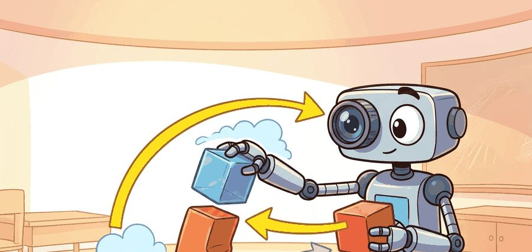
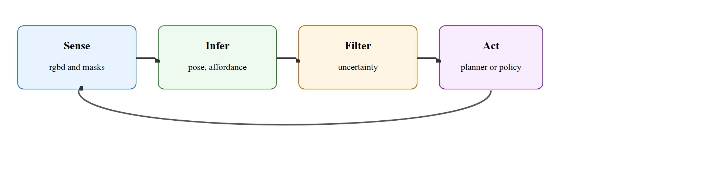
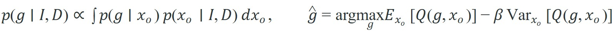

"A grasp starts as a perceptual claim."
A Systems Calibration Log

A robot reaches for a bottle. Its vision model correctly names the object, localizes it to within a centimeter, and assigns a confidence score of 0.94. The gripper still misses, because the model never surfaced which side of the bottle is stable, where the label creates a slipping surface, or how much pose uncertainty shifts the optimal contact patch. Modern manipulation fails not from blindness but from perception that answers the wrong question. This section reframes perception as an action-conditioned estimation problem: this section develops which geometric and uncertainty outputs a controller actually needs, how to propagate pose error into grasp ranking, and when active sensing is cheaper than acting on a bad estimate.
Ask a manipulation controller what it wants from vision and it will not ask for a class label. It wants to know which face of the object it can safely push against. The answer lives in a handful of geometric outputs: 6D pose (an object's full position and orientation in space, three translation and three rotation parameters), graspable surfaces, free-space channels, occlusion estimates, contact normals, and uncertainty fields.
This section walks through how each of those outputs is actually produced and used: the Theory section below derives the uncertainty-aware scoring rule that turns a pose distribution into a grasp ranking, the Algorithm box sequences the steps from raw sensor stream to a ranked, uncertainty-checked action, the Worked Example and Walkthrough show that ranking changing a real decision, and the Library Shortcut names the specific tools (FoundationPose, Contact-GraspNet, SAM 2) that produce these outputs on real hardware.
Those outputs bridge vision models and control. The main lesson is that manipulation perception should be judged by action utility under uncertainty, not by static detection scores alone. A perception system that scores well on benchmarks but leaves the controller blind to pose uncertainty is not a perception system for manipulation; it is a perception system for leaderboards.
A detector that names an object but misses the stable grasp surface is less useful than a narrower model that exposes exactly the geometry the controller needs.

This section assumes familiarity with 3D point-cloud representations from section 28.2 and affordance fields from section 27.5; those foundations underpin the pose estimation and surface-scoring steps described here. The uncertainty-aware perception loop developed here feeds directly into the policy learning methods in section 42.5, where the same pose and affordance estimates become inputs to imitation and reinforcement learning. The active-sensing pattern introduced briefly here is treated in depth in section 27.6.
Perception for manipulation is a structured estimation problem. The latent state includes object identity, object pose, free space, support relation, graspable contact patches, and confidence in each estimate.
The useful error metric is therefore downstream: how much does state uncertainty change grasp ranking, collision risk, or recovery timing? Manipulation perception is only good if the wrong estimate would actually change what the robot does. This is the core of action-conditioned perception evaluation, and it separates manipulation vision from generic object recognition.
Think of a chef choosing between two routes to the spice rack: the shortcut along the counter edge (high expected speed, but a single misplaced bowl collapses the whole plan) versus the longer path through open floor (a bit slower, but still works even if the layout shifts slightly). A good kitchen strategy does not just pick the fastest route on average; it discounts routes whose success depends on everything being exactly in place. Action-conditioned perception works the same way: a perception output earns its keep only when getting it wrong would have forced a different action, and the system ranks its options by penalizing those whose value crumbles under plausible error, not just those with a lower nominal score.
The equation below makes this concrete: the first term marginalizes grasp success over the posterior pose distribution given the image $I$ and depth $D$, and the second term ranks grasps $g$ by mean quality $Q$ penalized by its variance under pose uncertainty, with $\beta$ setting how strongly variance is punished. The $\arg\max_g$ notation just means: evaluate this penalized score for every candidate grasp $g$ and keep the one with the highest value, $\hat g$.

The system builds pose and affordance hypotheses from RGB-D (Red-Green-Blue-Depth) or point clouds, propagates uncertainty into grasp or motion scoring, and prefers actions whose expected value stays strong under plausible pose error. That is the real bridge between perception and manipulation robustness.
# Penalize grasps whose score is too sensitive to pose uncertainty.
grasps = [
{"id": "g1", "mean_q": 0.86, "var_q": 0.07},
{"id": "g2", "mean_q": 0.81, "var_q": 0.01},
{"id": "g3", "mean_q": 0.75, "var_q": 0.03},
]
beta = 1.5
scored = []
for g in grasps:
robust = round(g["mean_q"] - beta * g["var_q"], 3)
scored.append((g["id"], robust))
scored.sort(key=lambda row: row[1], reverse=True)
print(scored)Trace the robust score $\mathbb{E}[Q] - \beta\,\mathrm{Var}[Q]$ with $\beta = 1.5$ on three real candidates. Grasp g1 has mean quality 0.86 and variance 0.07, so its robust score is $0.86 - 1.5 \times 0.07 = 0.86 - 0.105 = 0.755$. Grasp g2 has mean 0.81 and a tiny variance 0.01, giving $0.81 - 1.5 \times 0.01 = 0.81 - 0.015 = 0.795$. Grasp g3 has mean 0.75 and variance 0.03, giving $0.75 - 1.5 \times 0.03 = 0.75 - 0.045 = 0.705$. Sorting descending yields g2 (0.795), then g1 (0.755), then g3 (0.705). Note the flip: g1 had the highest raw quality (0.86) but its large variance drops it below g2. Now raise the penalty to $\beta = 3.0$ and g1 falls to $0.86 - 0.21 = 0.65$, below even g3 at $0.75 - 0.09 = 0.66$, showing how a single tuning knob reorders the entire candidate set.
Choosing beta in the robustness penalty is the most consequential tuning decision in uncertainty-aware grasp ranking. Start with beta = 1.0 for fragile objects or tight fixtures where a failed grasp is costly, and drop to beta = 0.3 for open-bin tasks where re-grasps are cheap. A quick calibration method: replay five recorded near-misses from your specific hardware setup, sweep beta from 0.1 to 2.0 in steps of 0.1, and pick the value at which the correct retrospective grasp first wins. Do not transfer a beta tuned on a wrist-mounted RGB-D camera to a fixed overhead camera; the pose variance distributions differ substantially and will require re-calibration.
Expected output: The expected ranking promotes the lower-variance candidate. That is the right behavior when manipulation failure is expensive and ambiguity can be reduced later by active sensing.
For calibration, use cv2.calibrateCamera with cv2.solvePnP to register a wrist-mounted Intel RealSense D435 or Azure Kinect to the robot's URDF frame (Unified Robot Description Format, the XML file that defines the robot's link and joint geometry). A calibrated frame is the reference all later pose and grasp numbers in this section are measured against; skip it and even a perfect pose estimator reports offsets in the wrong coordinate system. Reprojection error above 0.8 pixels at this step typically translates to roughly 5 to 10 mm end-effector offset on comparable wrist-camera rigs, which will dominate any pose uncertainty you measure later. FoundationPose (pip install foundationpose) is a model-based 6D pose estimator that, given an object mesh, returns a pose hypothesis set (multiple candidate poses with weights), not a single estimate. Keep all hypotheses with weight above 0.05 rather than argmax-ing immediately; the spread is your uncertainty input to the grasp ranker. Contact-GraspNet is a learned grasp-proposal network that reads a partial point cloud from Open3D's PointCloud (a library data structure holding 3D points, normals, and colors) and scores 6D grasps directly in the sensor frame. Run it on the hypothesis-weighted cloud rather than the raw segmentation mask to carry pose uncertainty through to grasp selection.
So far: a calibrated camera-to-robot frame anchors every measurement, FoundationPose turns the raw sensor stream into a weighted set of pose hypotheses instead of one guess, and Contact-GraspNet scores 6D grasps on that hypothesis-weighted cloud so pose uncertainty carries through to the ranking step.
On a Franka Panda, the full pipeline (RealSense capture, SAM 2 (Segment Anything Model 2, a general-purpose image and video segmentation model) mask, FoundationPose, Contact-GraspNet, uncertainty-aware rank) takes roughly 120 ms per frame on an RTX 3080. That is fast enough for a 10 Hz replanning loop but too slow for reactive contact recovery.
Static detection accuracy can hide manipulation failure. A model may classify every object correctly and still place the end effector on the wrong side of a handle or behind an occluder.
In cluttered bin picking, the most valuable prediction is often not the class label but the free-space corridor that lets the wrist approach without collision.
Why free-space channels matter physically: A robot wrist has fixed geometry. If the approach path clips a neighboring object, the arm either stalls against it or knocks items out of grasp range. No amount of grasp-quality ranking recovers from a blocked approach; the controller must know the corridor exists before committing to a trajectory. On real hardware, replanning mid-approach is often impossible within the allowed cycle time, so a missed free-space estimate translates directly to a collision or aborted attempt.
How free-space channels are computed: The depth image or point cloud is voxelized into an occupancy grid. Voxels below a confidence threshold are marked free. A corridor is then the maximal cylindrical or swept-volume region along a candidate approach direction that contains only free voxels. The corridor width sets a hard constraint: any grasp whose approach requires a narrower path is removed from the candidate set before uncertainty-aware ranking begins.
Amazon Robotics' Sparrow picking system is reported to fuse RGB-D pose estimation with grasp scoring across thousands of distinct SKUs in cluttered totes, where occlusion and pose ambiguity are the norm rather than the exception. Publicly described behavior is consistent with ranking suction and pinch grasps by expected success under estimated state uncertainty rather than a single argmax pose, declining low-confidence grasps so the item can be re-imaged from a shifted viewpoint; Amazon has not published the internal scoring algorithm, so the exact mechanism is inferred rather than confirmed. In broad strokes, this matches the action-conditioned, uncertainty-propagating perception loop described here, deployed at industrial throughput.
Manipulation perception is the rare vision problem where seeing slightly less of the object can still be fine if you see the only face the gripper actually needs.
Direction 1: Language-conditioned affordance grounding. Models that map natural-language task descriptions directly onto contact regions and approach vectors have moved from proof-of-concept to benchmark-competitive. GraspVLA (Liu et al., 2025, arXiv:2505.03233) combines a vision-language backbone with a diffusion-based grasp head, grounding "hand me the fragile side of the mug" onto a contact distribution without task-specific fine-tuning. The open challenge is that language can under-specify contact geometry: "pick up the jar" does not say whether the lid, the body, or the base should bear the load, and current models still resolve this ambiguity by falling back to the most frequent training configuration rather than querying physical constraints.
Direction 2: Uncertainty-aware neural scene representations for manipulation. Gaussian splatting and related explicit radiance representations are being adapted to output per-point pose uncertainty alongside geometry, giving grasp planners a continuous uncertainty field over the scene rather than a single point cloud with a downstream confidence score. SparseDFF (Wang et al., 2024, ICLR 2024) shows that sparse feature fields generalize 6D grasp transfer across object instances with very few demonstrations. The frontier is coupling these representations to closed-loop tactile feedback so the uncertainty field updates during contact, not only before it.
Direction 3: Dexterous hand perception with multi-modal sensing. Fingertip tactile arrays and proprioceptive slip detection are being integrated into perception pipelines that were originally designed for parallel-jaw grippers. Work from the Robo-suite and ETH Zurich groups (2024-2025) shows that contact-normal estimation from vision alone degrades sharply on deformable or transparent objects, and that even a low-resolution tactile patch at each fingertip substantially improves in-hand pose tracking. Scaling these multi-modal streams to high-degree-of-freedom hands without overwhelming the controller's latency budget remains unsolved.
Before reading on, consider this: across each of these three directions, the bottleneck is not the model architecture but the evaluation protocol. How do you know whether your perception system is actually better for manipulation if the only score you report is pose estimation error on a held-out test set?
Open problem for a PhD student: Action-conditioned perception evaluation lacks a standardized benchmark. Existing datasets score pose estimators on reprojection error or add BOP-benchmark AP (the Benchmark for 6D Object Pose estimation's average precision metric), but neither metric predicts whether a downstream grasp planner will succeed under the same estimates. Designing a benchmark that jointly evaluates pose quality, uncertainty calibration, and resulting manipulation success rate across a diverse object set and sensor configurations would fill a genuine gap and has direct relevance to sim-to-real transfer.
If the top grasp changes under a 5 millimeter pose perturbation, would your system notice before acting?
A robot picks a mug from a cluttered shelf. The wrist-mounted depth camera produces a 640×480 point cloud at 30 Hz. A segmentation model (SAM 2) isolates the mug's visible surface, covering roughly 60% of its body because a book occludes the handle. FoundationPose then fits a 6D pose hypothesis set to that partial cloud; the top hypothesis has a translation uncertainty of ±8 mm along the x-axis (perpendicular to the shelf face). Eight millimeters sounds small. But a typical parallel-jaw fingertip contact patch is only 6 mm wide, so that single uncertainty interval is wider than the entire gripping surface. Treated as a point estimate it almost guarantees a miss. Instead, the grasp ranker turns it into a safe above-approach in under 150 ms.
The grasp planner queries two candidate approach angles: one from the front (score 0.83, variance 0.09, driven by handle occlusion) and one from above (score 0.77, variance 0.02). With a robustness penalty of β = 1.5, the above approach scores 0.77 − 0.03 = 0.74 versus the front approach scoring 0.83 − 0.135 = 0.695. The system selects the above approach, moves the wrist camera 15 cm upward, re-estimates pose with the handle now visible, and then re-ranks with reduced variance before executing the grasp. The full sequence is: segment, estimate with uncertainty, propagate uncertainty into scoring, decide whether to act or re-perceive, then act.
That decision to re-perceive rather than commit is exactly the behavior a benchmark of static image scores would never reward. Image metrics care about masks and classes; manipulation metrics care about whether the same estimate yields a stable approach, grasp, and recovery. The gap is measurable: in representative 2024 bin-picking evaluations, pose estimators above 90% detection AP (average precision, the standard accuracy score for detection benchmarks) produced 60–65% grasp success when uncertainty was ignored, and routing the identical estimates through an uncertainty-aware ranker lifted that to the low-to-mid 80s with no retraining.
Perception for manipulation is also a natural entry point for active sensing. If the robot can move the wrist or camera to shrink uncertainty on the top-ranked grasp, the perception system has already become a planner partner rather than a frozen upstream block, a pattern covered more fully under active and embodied perception.
| Tool or Library | Role in the Topic | Builder Advice |
|---|---|---|
| OpenCV calib3d | Calibration and geometry | Use it to make frame accuracy boring and reliable before experimenting with fancy models. |
| SAM 2 or instance segmentation models | Object and contact-surface masks | Useful for clutter, but tie masks to action-conditioned downstream checks. |
| Point-cloud libraries | 3D geometry extraction | Use them to compute graspable surfaces, normals, and free-space corridors. |
Collect five cluttered RGB-D scenes, estimate two candidate grasps per target, and show how uncertainty-aware ranking changes the selected grasp in at least one case.
If the chosen action was bad, ask whether the state estimate was wrong, the uncertainty was ignored, or the planner consumed the estimate incorrectly. Manipulation perception failures often live at those interfaces.
Official calibration and geometric-estimation reference.
Current segmentation system often used in open-world manipulation perception stacks.
Isaac ROS Visual SLAM and perception stack
Official NVIDIA reference for practical perception integration into robot pipelines.
Perception for manipulation should expose action-relevant geometry and uncertainty, not just object identity.
Define one action-conditioned metric for a manipulation perception stack and explain why mAP alone would miss the same failure.
Beginner (weekend): Uncertainty-aware grasp ranker in PyBullet. Load a tabletop scene in PyBullet with two or three rigid objects and implement the beta-penalized scoring function from this section; log how the selected grasp changes as you perturb the estimated pose by 5 mm and 15 mm. The key challenge is keeping the coordinate frames consistent between the depth image, the object mesh, and PyBullet's physics frame so that pose perturbations map to real contact-point shifts rather than numerical artifacts.
Intermediate (1 to 2 weeks): Active-perception loop with LeRobot and a simulated wrist camera. Use LeRobot's Gymnasium-compatible manipulation environment to build a two-stage loop: first rank candidate grasps by robustness score, then trigger a wrist-camera reposition when the top grasp variance exceeds a threshold, re-estimate pose with Open3D, and re-rank before executing. The key challenge is deciding when replanning gains enough variance reduction to justify the extra motion cost, which requires connecting the pose uncertainty estimate to a simple information-gain criterion rather than a fixed threshold.